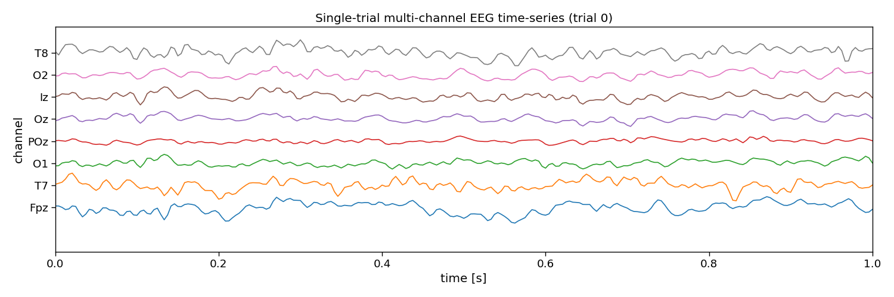

Note
Go to the end to download the full example code
Epoch CCA and LDA
This script shows how to use CCA and LDA on epochs within a trial, using PyntBCI, for decoding c-VEP trials. Epochs are defined as the windows of data within a trial, synchronized to the onset of individual flashes. For each of these epochs the classifier determines whether a flash was presented or not. Integrating that information over time, allows the decoding of trials.
The data used in this script come from Thielen et al. (2021), see references [1] and [2].
References
import os
import matplotlib.pyplot as plt
import numpy as np
import seaborn
from mne.decoding import Vectorizer
from sklearn.discriminant_analysis import LinearDiscriminantAnalysis
from sklearn.pipeline import make_pipeline
import pyntbci
seaborn.set_context("paper", font_scale=1.5)
Set the data path
The cell below specifies where the dataset has been downloaded to. Please, make sure it is set correctly according to the specification of your device. If none of the folder structures in the dataset were changed, the cells below should work just as fine.
path = os.path.join(os.path.dirname(pyntbci.__file__)) # path to the dataset
subject = "sub-01" # the subject to analyse
The data
The dataset consists of (1) the EEG data X that is a matrix of k trials, c channels, and m samples; (2) the labels y that is a vector of k trials; (3) the pseudo-random noise-codes V that is a matrix of n classes and m samples. Note, the codes are upsampled to match the EEG sampling frequency and contain only one code-cycle.
# Load data
fn = os.path.join(path, "data", f"thielen2021_{subject}.npz")
tmp = np.load(fn)
X = tmp["X"]
y = tmp["y"]
V = tmp["V"]
fs = tmp["fs"]
fr = 60
print("X", X.shape, "(trials x channels x samples)") # EEG
print("y", y.shape, "(trials)") # labels
print("V", V.shape, "(classes, samples)") # codes
print("fs", fs, "Hz") # sampling frequency
print("fr", fr, "Hz") # presentation rate
# Extract data dimensions
n_trials, n_channels, n_samples = X.shape
n_classes = V.shape[0]
# Read cap file
capfile = os.path.join(path, "capfiles", "thielen8.loc")
with open(capfile, "r") as fid:
channels = []
for line in fid.readlines():
channels.append(line.split("\t")[-1].strip())
print("Channels:", ", ".join(channels))
# Visualize EEG data
i_trial = 0 # the trial to visualize
plt.figure(figsize=(15, 5))
plt.plot(np.arange(0, n_samples) / fs, 25e-6 * np.arange(n_channels) + X[i_trial, :, :].T)
plt.xlim([0, 1]) # limit to 1 second EEG data
plt.yticks(25e-6 * np.arange(n_channels), channels)
plt.xlabel("time [sec]")
plt.ylabel("channel")
plt.title(f"Single-trial multi-channel EEG time-series (trial {i_trial})")
plt.tight_layout()
# Visualize labels
plt.figure(figsize=(15, 3))
hist = np.histogram(y, bins=np.arange(n_classes + 1))[0]
plt.bar(np.arange(n_classes), hist)
plt.xticks(np.arange(n_classes))
plt.xlabel("label")
plt.ylabel("count")
plt.title("Single-trial labels")
plt.tight_layout()
# Visualize codes
Vup = V.repeat(20, axis=1) # upsample to better visualize the sharp edges
plt.figure(figsize=(15, 8))
plt.plot(np.arange(Vup.shape[1]) / (20 * fs), 2 * np.arange(n_classes) + Vup.T)
for i in range(1 + int(V.shape[1] / (fs / fr))):
plt.axvline(i / fr, c="k", alpha=0.1)
plt.yticks(2 * np.arange(n_classes), np.arange(n_classes))
plt.xlabel("time [sec]")
plt.ylabel("code")
plt.title("Code time-series")
plt.tight_layout()
- 

X (100, 8, 2520) (trials x channels x samples)
y (100,) (trials)
V (20, 504) (classes, samples)
fs 240 Hz
fr 60 Hz
Channels: Fpz, T7, O1, POz, Oz, Iz, O2, T8
Epoch decoding
In this section, we will perform the classification of trials as a two-step approach. Firstly, we will classify so-called “events” at the “epoch” level. Subsequently, these epoch-level classifications are used (and integrated over time) to classify full “trials”.
Specifically, a trial contains the multi-channel EEG response to a visually presented stimulus. In the c-VEP domain, the stimulus is a pseudo-random noise-code that encodes how each of the classes flashes (i.e., a 1-bit denotes a white background, a 0-bit denotes a black background). In this notebook, we call the 1-bits “flashes” and the 0-bits “no-flashes”. In particular, the events we will work with are simply flashes versus no-flashes. Do note though, that many other event-codings exist, for instance the “duration” events which considers two subsequent 1-bits to be another event, while with the current flash versus no-flash encoding we assume that two consecutive 1-bits are the linear summation of two identical responses (one a single bit shifted in time).
We thus need to slice the data into “epochs”, which are windows of data around the individual events. Here, we choose to cut epochs rom the onset of the event, until 300 ms after the event (which should capture the classical Flash VEP). These events will be labeled with the correct flash/no-flash label which comes from the codebook (V).
The sliced dataset X will be of shape trials by epochs (within one trial) by the number of channels by the number of samples (in an epoch, not trial). Secondly, the sliced dataset contains labels y of shape trials by epochs, specifically, a target class-label (flash versus no-flash) for each epoch in each trial.
# Slice trials to epochs
epoch_size = int(0.3 * fs) # 300 ms
step_size = int(1 / 60 * fs) # 1/60 ms
X_sliced, y_sliced = pyntbci.utilities.trials_to_epochs(X, y, V, epoch_size, step_size)
print("X_sliced: shape:", X_sliced.shape, ", type:", X_sliced.dtype)
print("y_sliced: shape:", y_sliced.shape, ", type:", y_sliced.dtype)
# Inspect sliced labels
plt.figure(figsize=(15, 3))
hist = np.histogram(y_sliced, bins=np.arange(2 + 1))[0]
plt.bar(np.arange(2), hist)
plt.xticks(np.arange(2), ["non-target (no flash)", "target (flash)"])
plt.xlabel("label")
plt.ylabel("count")
plt.title("Epoch labels")
print("Number of flash epochs:", np.sum(y_sliced == 1))
print("Number of non-flash epochs:", np.sum(y_sliced == 0))
X_sliced: shape: (100, 612, 8, 72) , type: float32
y_sliced: shape: (100, 612) , type: uint8
Number of flash epochs: 30600
Number of non-flash epochs: 30600
Epoch to trial decoding with LDA
This section performs the two-step (epoch then trial) classification using a linear discriminant analysis (LDA) classifier. This classifier classifies an epoch into flash or no-flash. With that information, an epoch-level accuracy can be computed. To perform classification at the trial level, all classifications within the trial are integrated to perform a classification of the class label.
Classification at the trial level is done by considering the prediction scores at the epoch level (i.e. probabilities). These tell for each epoch within a trial the probability that a flash occurred. Ideally, this probability is high if there was a flash (approaching 1) and 0 if not (approaching 0). This means that this probability vector is in fact already an attempt to reconstruct the bit sequence itself. Therefore, with the vector of probabilities for each of the epochs in a trial, we can simply compute a correlation with the codebook, to find the code-sequence that best matches the probability vector (i.e. reconstructed code). Taking the argmax of the correlations yields the predicted class label. With these the trial level accuracy can be computed.
Note, the LDA used here takes the entire 2D spatio-temporal feature matrix that is channels by samples, and flattens these to a feature vector. Thus, LDA will learn a spatio-temporal filter to perform classification.
To estimate a generalization performance, a chronological cross-validation is performed below.
Note, the dataset contains single-trials of 31.5 seconds long. For many participants in the dataset, if all data is used, this leads to 100% accuracy. A new parameter is introduced here, that cuts the single-trials to shorter lengths. Ideally, this parameter is explored, to estimate a so-called decoding curve.
# Set trial duration
n_samples = int(4.2 * fs)
# Set epoch size
epoch_size = int(0.3 * fs)
step_size = int(1 / 60 * fs)
# Setup cross-validation
n_folds = 5
folds = np.repeat(np.arange(n_folds), n_trials / n_folds)
# Set up codebook for trial classification
n = int(np.ceil(n_samples / V.shape[1]))
_V = np.tile(V, (1, n)).astype("float32")[:, :n_samples - epoch_size:step_size]
# Setup pipeline
pipeline = make_pipeline(
Vectorizer(),
LinearDiscriminantAnalysis(solver="eigen", shrinkage="auto"))
# Loop folds
accuracy_epoch = np.zeros(n_folds)
accuracy_trial = np.zeros(n_folds)
for i_fold in range(n_folds):
# Split data to train and valid set
X_trn, y_trn = X[folds != i_fold, :, :n_samples], y[folds != i_fold]
X_tst, y_tst = X[folds == i_fold, :, :n_samples], y[folds == i_fold]
# Slice trials to epochs
X_sliced_trn, y_sliced_trn = pyntbci.utilities.trials_to_epochs(X_trn, y_trn, V, epoch_size, step_size)
X_sliced_tst, y_sliced_tst = pyntbci.utilities.trials_to_epochs(X_tst, y_tst, V, epoch_size, step_size)
# Train pipeline (on epoch level)
pipeline.fit(X_sliced_trn.reshape((-1, n_channels, epoch_size)), y_sliced_trn.flatten())
# Apply pipeline (on epoch level)
yh_sliced_tst = pipeline.predict(X_sliced_tst.reshape((-1, n_channels, epoch_size)))
# Compute accuracy (on epoch level)
accuracy_epoch[i_fold] = np.mean(yh_sliced_tst == y_sliced_tst.flatten())
# Apply pipeline (on trial level)
ph_tst = pipeline.predict_proba(X_sliced_tst.reshape((-1, n_channels, epoch_size)))[:, 1]
ph_tst = np.reshape(ph_tst, y_sliced_tst.shape)
rho = pyntbci.utilities.correlation(ph_tst, _V)
yh_tst = np.argmax(rho, axis=1)
accuracy_trial[i_fold] = np.mean(yh_tst == y_tst)
# Print accuracy (average and standard deviation over folds)
print("LDA:")
print("\tEpoch: avg={:.1f} with std={:.2f}".format(accuracy_epoch.mean(), accuracy_epoch.std()))
print("\tTrial: avg={:.1f} with std={:.2f}".format(accuracy_trial.mean(), accuracy_trial.std()))
# Plot epoch accuracy (over folds)
plt.figure(figsize=(15, 3))
plt.bar(np.arange(n_folds), accuracy_epoch)
plt.hlines(np.mean(accuracy_epoch), -.5, n_folds - 0.5, color="k")
plt.xlabel("(test) fold")
plt.ylabel("accuracy")
plt.title(f"LDA: classification accuracy (epoch): avg={np.mean(accuracy_epoch):.2f} std={np.std(accuracy_epoch):.2f}")
# Plot trial accuracy (over folds)
plt.figure(figsize=(15, 3))
plt.bar(np.arange(n_folds), accuracy_trial)
plt.hlines(np.mean(accuracy_trial), -.5, n_folds - 0.5, color="k")
plt.xlabel("(test) fold")
plt.ylabel("accuracy")
plt.title(f"LDA: classification accuracy (trial): avg={np.mean(accuracy_trial):.2f} std={np.std(accuracy_trial):.2f}")
LDA:
Epoch: avg=0.7 with std=0.01
Trial: avg=1.0 with std=0.02
Text(0.5, 1.0, 'LDA: classification accuracy (trial): avg=0.99 std=0.02')
Epoch to trial decoding with CCA and LDA
The code cell below performs the two-step (epoch then trial) classification using a canonical correlation analysis (CCA) and a linear discriminant analysis (LDA) classifier. CCA performs spatial filtering, and LDA classifies an epoch into flash or no-flash. With that information, an epoch-level accuracy can be computed. To perform classification at the trial level, all classifications within the trial are integrated to perform a classification of the class label.
Classification at the trial level is done by considering the prediction scores at the epoch level (i.e. probabilities). These tell for each epoch within a trial the probability that a flash occurred. Ideally, this probability is high if there was a flash (approaching 1) and 0 if not (approaching 0). This means that this probability vector is in fact already an attempt to reconstruct the bit sequence itself. Therefore, with the vector of probabilities for each of the epochs in a trial, we can simply compute a correlation with the codebook, to find the code-sequence that best matches the probability vector (i.e. reconstructed code). Taking the argmax of the correlations yields the predicted class label. With these the trial level accuracy can be computed.
Note, other than in the previous section, here we first fit a CCA to learn a spatial filter, with which the 2D spatio-temporal data matrix of channels by samples can be projected down (i.e., spatially filtered) to a vector (i.e., a virtual channel) of samples. LDA will then only receive these samples as input, so will learn a temporal filter only.
To estimate a generalization performance, a chronological cross-validation is performed below.
Note, the dataset contains single-trials of 31.5 seconds long. For many participants in the dataset, if all data is used, this leads to 100% accuracy. A new parameter is introduced here, that cuts the single-trials to shorter lengths. Ideally, this parameter is explored, to estimate a so-called decoding curve.
# Set trial duration
n_samples = int(4.2 * fs)
# Set epoch size
epoch_size = int(0.3 * fs)
step_size = int(1 / 60 * fs)
# Setup cross-validation
n_folds = 5
folds = np.repeat(np.arange(n_folds), n_trials / n_folds)
# Set up codebook for trial classification
n = int(np.ceil(n_samples / V.shape[1]))
_V = np.tile(V, (1, n)).astype("float32")[:, :n_samples - epoch_size:step_size]
# Setup pipeline
cca = pyntbci.transformers.CCA(n_components=1)
vec = Vectorizer()
lda = LinearDiscriminantAnalysis(solver="eigen", shrinkage="auto")
# Loop folds
accuracy_epoch = np.zeros(n_folds)
accuracy_trial = np.zeros(n_folds)
for i_fold in range(n_folds):
# Split data to train and valid set
X_trn, y_trn = X[folds != i_fold, :, :n_samples], y[folds != i_fold]
X_tst, y_tst = X[folds == i_fold, :, :n_samples], y[folds == i_fold]
# Slice trials to epochs
X_sliced_trn, y_sliced_trn = pyntbci.utilities.trials_to_epochs(X_trn, y_trn, V, epoch_size, step_size)
X_sliced_tst, y_sliced_tst = pyntbci.utilities.trials_to_epochs(X_tst, y_tst, V, epoch_size, step_size)
# Train pipeline (on epoch level)
X_ = X_sliced_trn.reshape((-1, n_channels, epoch_size))
X_ = cca.fit_transform(X_, y_sliced_trn.flatten())[0]
X_ = vec.fit_transform(X_, y_sliced_trn.flatten())
lda.fit(X_, y_sliced_trn.flatten())
# Apply pipeline (on epoch level)
X_ = X_sliced_tst.reshape((-1, n_channels, epoch_size))
X_ = cca.transform(X_)[0]
X_ = vec.transform(X_)
yh_sliced_tst = lda.predict(X_)
# Compute accuracy (on epoch level)
accuracy_epoch[i_fold] = np.mean(yh_sliced_tst == y_sliced_tst.flatten())
# Apply pipeline (on trial level)
ph_tst = pipeline.predict_proba(X_sliced_tst.reshape((-1, n_channels, epoch_size)))[:, 1]
ph_tst = np.reshape(ph_tst, y_sliced_tst.shape)
rho = pyntbci.utilities.correlation(ph_tst, _V)
yh_tst = np.argmax(rho, axis=1)
# Compute accuracy (on trial level)
accuracy_trial[i_fold] = np.mean(yh_tst == y_tst)
# Print accuracy (average and standard deviation over folds)
print("CCA+LDA:")
print("\tEpoch: avg={:.1f} with std={:.2f}".format(accuracy_epoch.mean(), accuracy_epoch.std()))
print("\tTrial: avg={:.1f} with std={:.2f}".format(accuracy_trial.mean(), accuracy_trial.std()))
# Plot epoch accuracy (over folds)
plt.figure(figsize=(15, 3))
plt.bar(np.arange(n_folds), accuracy_epoch)
plt.hlines(np.mean(accuracy_epoch), -.5, n_folds - 0.5, color="k")
plt.xlabel("(test) fold")
plt.ylabel("accuracy")
plt.title("CCA+LDA: classification accuracy (epoch): " +
f"avg={np.mean(accuracy_epoch):.2f} std={np.std(accuracy_epoch):.2f}")
# Plot trial accuracy (over folds)
plt.figure(figsize=(15, 3))
plt.bar(np.arange(n_folds), accuracy_trial)
plt.hlines(np.mean(accuracy_trial), -.5, n_folds - 0.5, color="k")
plt.xlabel("(test) fold")
plt.ylabel("accuracy")
plt.title("CCA+LDA: classification accuracy (trial): " +
f"avg={np.mean(accuracy_trial):.2f} std={np.std(accuracy_trial):.2f}")
# plt.show()
CCA+LDA:
Epoch: avg=0.7 with std=0.01
Trial: avg=1.0 with std=0.02
Text(0.5, 1.0, 'CCA+LDA: classification accuracy (trial): avg=0.99 std=0.02')
Total running time of the script: (0 minutes 8.370 seconds)